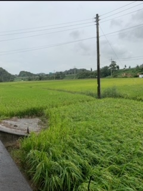

아파트 단지 내에 있는 돌조각
중동대동다숲의 경비실 옆 돌로 이루어진 조각상이다.이 조각상의 모습이 위의 넓적한 돌로 인해 자칫하면 불균형적인 오습도 보여줄 수 있지만 가장 아래에 있는 돌받침이 균형이 깨져보이지 않게하여 오히려 조화로움을 강조함.또한 비가 오는 날에는 큰 모자를 써서 비를 피하는 모습을 연상시킴.
자동차 매장 안의 아반떼
저녁 9시 즈음에 찍힌 신형의 아반떼이다. 아반떼는 앞의 라이트가 현대차에서 만든 제품임을 보여주듯 H자로 라이트를 붉힘.동색의 반짝이는 색이 자동차의 세련됨을 강조함.이로 인해 골져스해 보이기도 하고 아날로그적인 느낌을 살려줌. 밤이라 깜깜한 장소에서 환하게 빛을 내뿜고 있는 차량의 모습이 어둠을 밝혀주어 대비를 이룸.
무한의장
중동대동다숲이라는 아파트단지 내에 있는 정희만이라는 작가의 '무한의장'이라는 작품이다.양쪽에 각각 3개씩 달려있는 직육면체의 형태를 가진 돌이 (-x,y),(x,-y)의 대칭으로 이루어져 균형의 매력을 보여줌.중심에 겉부분은 불규칙적으로 돌이 배치되어 있지만 중심으로 갈수록 모여져 화합을 상징하는 것을 보여줌.
저녘의 스타벅스

저녁의 스타벅스의 사진이다.밤에 푸른 빛이 반사되어 나오는 모습이 건물 내의 누런 빛과 대조되어 아름다움을 보여줌.로우 앵글로 찍어 그 장엄함을 강조함.이로 인해 스타벅스는 각 지점의 건물의 외형과 내부 디자인을 신경쓰는 점을 알 수 있다.
어린 소나무
기숙사 잔딧가에 있는 어린 소나무이다.소나무의 강인함과 아름다움을 보여줌.크게 자라지않은 어린 소나무 옆의 다른 풀들보다 높게 성장할 수 있는 그 잠재성을 보여줌.
고풍스러운 한식식당
한 한식집의 앞마당이다.천장에 달려있는 나뭇잎이 자연친화적인 모습을 보여줌.같이 달려있는 고급스러운 전등이 그와 어울려 자연적임과 인공적임의 조화로움을 보여줌.한옥에 기인한 식당의 건축양식이 자연과 조화를 이룸.자연스럽고 공간 구조 그 자체의 멋을 보여줌.
산책하다 찍은 가로수길
아파트 주변을 가로수 길이다. 잎이 없는 나무의 그 본연적인 아름다움이 보임.굳건하고 강인한 형태가 도드라짐.맑은 하늘의 모습이 어두운 나무와 대비됨.
한 통나무의 모습
책상 위에 있던 한 통나무의 모습이다.통나무의 형태가 닭발의 형상처럼 보임.윗부분은 거칠거칠하고 많이 갈라져 러프한 느낌임.아랫부분은 밝은 갈색에 갈라짐이 덜 하고 맨들맨들한 부분이 서로 대조됨.
둑 위의 왜가리
둑 위에 앉아있는 한 왜가리이다.왼 쪽 아래의 밭과 오른쪽 위의 논이 둑으로 경계가 쳐져 공간의 분리를 보여줌.둑위에 왜가리가 앉아있는 모습이 허수아비같은 논을 보호하는 존재로 연상이 됨.뒤의 푸르른 논과 달리 왜가리의 하얀 순백의 모습이 대비됨.
펼쳐진 논의 정경
하동의 논의 풍경이다.벼의 푸르른 모습이 시원하고 산뜻한 느낌을 줌.전봇대는 인공적이지만 자연과 어울러 조화로워ㅏ 보임.뒤로 갈수록 밝은 느낌으로 푸르른 논은 뒤로 빠지는 공간감을 보여줌.